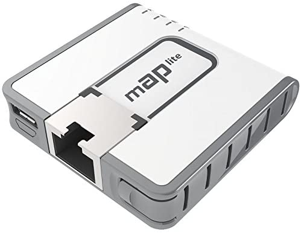

[04-11-2019] | Mikrotik mAP Lite Travel Router
Spending ~100 nights a year in a hotel necessitated a travel router. There's some off the shelf options available but I wanted to go with an offering from MikroTik to continue learning their ecosystem.
I've since been able to implement MikroTik gear at work in multiple different niche deployments, thanks in part to what I learned over a couple years of tinkering with this thing here and there.

The steps to configure, without terminal, are as follows:
The big key to it is the NetWatch tool. This allows the router to reset to a default configuration that transmits an SSID of "Unconfigured" so you can reconnect to it. Without this, it will always hunt for the last SSID it was connected to, leaving you unable to reconnect wirelessly without resetting and reloading a backup.
Here's a link to the MikroTik forums with some more info from others who have used this router in a similar configuration: https://forum.mikrotik.com/viewtopic.php?t=129398